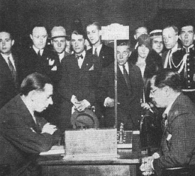
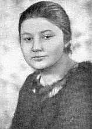
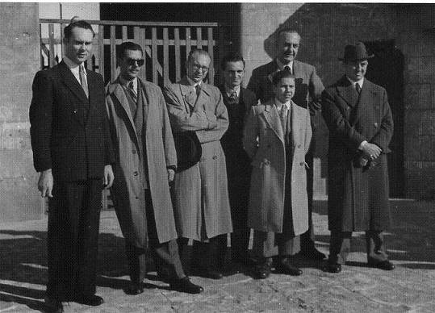

Pgn chess in Barcelona
Three big chess events happened in Barcelona.
A great tournament was organized in Barcelona
from 25 ix until 11 x 1929. The occasion was a world exhibition. 14
men and one woman participated. Great star was former world champion
Capablanca. Champion of the females Menchik participated too. Capa
won.
An international chess tournament happened at
the occasion of the 25th anniversary of the Club Ajedrez Barcelona.
14 contestants competed from 9 until 22 xi 1946. Najdorf was the
star, but the public interest went to the 15-years-old Pomar.
Najdorf won but the achievement by Pomar disappointed.
|
 |
 |
 |
| Colle and Capablanca
in Barcelona 1929 |
Miss Vera Menchik |
O'Kelly, Medina, Llorens, Wade, Pomar,
Golmayo and Najdorf in Barcelona 1946 |
A series of six tournaments was organised by
the GrandMasters Association in 1988 and 1989. Barcelona 1989 was
the fourth installment. A list of 25 top players had been made.
Sixteen men from that list participated in Barcelona from 20 iii
until 20 iv 1989. Illescas Cordoba was added as the local hero.
Ljubojevic took the lead. Kasparov caught up in the last round.